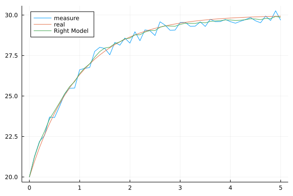

卡尔曼滤波理论与应用
Contents：卡尔曼滤波(Kalman Filtering)
Contributor: YJY
Email:522432938@qq.com
如有错误，请批评指正。
一篇卡尔曼滤波的英文博客，兼具理论与感性认识。
上述博客的中文翻译版本
卡尔曼滤波介绍
一句简单的话概括卡尔曼滤波：综合考虑模型计算值与实际测量值，估计动态系统中状态的真实值。
对这句概括的话，提出2个问题：
- 为什么要综合考虑模型计算值和实际测量值？
- 如何综合考虑？
对于问题1，有2个事实：
- 模型不是准确的。例如，欧姆定律中，电阻值真的是一个常数吗？基础模型尚且如此，更不用说复杂系统的模型了。所以，描述系统的模型，一定是有偏差的。
- 测量值不代表真实值。通过各种仪表读数时，读出来的数不能代表真实值，读数时会有各种随机误差。
所以，Kalman觉得可以结合模型计算值与观测值，对状态的真实值进行估计。
对于问题2：
综合考虑的方式为：先通过状态空间方程的计算出结果，再对结合误差对结果进行修正。由此可见，卡尔曼滤波是控制学与统计学的交叉学科方法。
卡尔曼滤波的数学表达
只给结论，不推导。
\[\left\{\begin{array}{l} x_{k}=F_{k-1} x_{k-1}+\Gamma_{k-1} w_{k-1} \\ z_{k}=H_{k} x_{k}+v_{k} \end{array}\right.\]
其中：
- 下表$k$代表$k$时刻
- 系统状态向量——$x_k$（行向量）
- 系统状态转移矩阵——$F_k$，如果在时间域上不变则为——$F$
- 模型噪声——$w_k$
- 模型噪声矩阵（描述噪声对变量的影响）——$\Gamma_k$（行向量）
- 系统量的测向量——$z_k$
- 量测矩阵——$H_k$（行向量）
- 模型噪声——$v_k$
同时，噪声满足正态分布：
\[w_k \sim N(0,Q_k) \\ v_k \sim N(0,R_k)\]
下面为卡尔曼滤波的滤波过程:
Step1 模型计算:
\[x_{k}=F_{k-1} x_{k-1}\\ P_{k}=F_{k-1} P_{k-1} F_{k-1}^{T}+\Gamma_{k-1} Q_{k-1} \Gamma_{k-1}^{T}\]
Step2 滤波:
\[G_{k}=P_{k } H_{k}^{T}\left[H_{k} P_{k} H_{k}^{T}+R_{k}\right]^{-1}\\ \hat{x}_{k}=x_{k}+G_{k}(\tilde{z}_{k} - H_{k}x_{k})\\ \hat{P}_k = (I-G_kH_k)P_k\]
其中：
- 系统的量测的协方差矩阵——$P$
- 滤波后的系统状态向量——$\hat{x}_{k}$
- 滤波后的系统状态向量——$\hat{x}_{k}$
- 模型噪声的方差——$Q_k$，如果在时间域上不变则为——$Q$
- 测量噪声的方差——$R_k$，如果在时间域上不变则为——$R$
- 滤波后的系统的量测的协方差矩阵——$\hat{P}_{k}$
- 测量值向量——$\tilde{z}_{k}$
- 模型噪声——$v_k$
卡尔曼滤波实例
考虑加热器：$\frac{dT}{dt} = -(T-20) + 10$ 即散热系数为1，加热功率为10，环境温度为20。
使用DifferentialEquations.jl获得仿真数据并加上扰动。
using DifferentialEquations
using Statistics, Plots
f(u, t, p) = -(u - 20) + 10
prob = ODEProblem(f, 20.0, (0, 5))
sol = solve(prob, saveat=0.1)
noise = rand(-0.5:0.0001:0.5, length(sol.u))
cov(noise)
measureT = noise + sol.u
t = collect(0:0.1:5)
plot(t, measureT, label="measure", legend_position=:topleft)
plot!(t, sol.u, label="real", legend_position=:topleft)获得的measureT将作为未来每个时间点上的温度测量数据（实际为精确解加随机误差生成的数据）。真实值与测量值如下图。

若取$dt=0.1$，使用欧拉法离散，则上述微分则转变为状态空间方程：$T_{k+1} = 0.9T_k+3$
若采用上述状态空间方程，则可以称之为“完美模型”。
为了验证卡尔曼滤波的有效性，我们设计一个十分错误的模型：$T_{k+1} = T_k$
即，我们认为这是一个温度不变的系统（错得不能再错的模型）。同时，给一个比较大的$Q_w$，说明模型扰动的方差比较大。
begin
F = 1
Γ = 0.1
H = 1
Qv = 0.8
Qw = 10
P = 10
x = 20.0
x_res = zeros(1, length(measureT))
p_res = zeros(1, length(measureT))
p_res[:, 1] = [P]
x_res[:, 1] = [x]
for i in 1:length(measureT)-1
_P = F * p_res[1, i] * F' .+ Γ' * Qw * Γ
_G = _P * H * inv(H * _P * H + Qv)
_x = F * x_res[1, i]
global x_res[1, i+1] = _x + _G * (measureT[i+1] - H' * _x)
global p_res[1, i+1] = (1 - _G' * H) * _P
end
plot!(t, x_res[1, :], label="Wrong Model", legend_position=:topleft)
end
结果显示，居然和真实值差不多。如果令$Q_w=1$，给得比较小。则变成了：

没那么好，但也不差（比直线好太多了）。
如果把模型设置成原本的模型则:
begin
F = 0.9
Γ = 0.1
H = 1
Qv = 0.8
Qw = 10
P = 10
x = 20.0
x_res = zeros(1, length(measureT))
p_res = zeros(1, length(measureT))
p_res[:, 1] = [P]
x_res[:, 1] = [x]
for i in 1:length(measureT)-1
_P = F * p_res[1, i] * F' .+ Γ' * Qw * Γ
_G = _P * H * inv(H * _P * H + Qv)
_x = F * x_res[1, i] + 3
global x_res[1, i+1] = _x + _G * (measureT[i+1] - H' * _x)
global p_res[1, i+1] = (1 - _G' * H) * _P
end
plot!(t, x_res[1, :], label="Right Model", legend_position=:topleft)
end
基本就一致了。
小结
卡尔曼滤波的重要意义是利用了测量值带来的信息。模型不准确的时候，利用滤波带来的效果，可以对模型进行一个矫正。
但它的缺点在于，对预测没有帮助。对未来的多点预测只能是通过模型。既然是预测，说明事情还没有发生，那测量值无法获得，也就无法通过测量值进行矫正。
其特点是，对已经发生的事情做一个优化，而不能提升预测未来的能力。